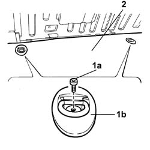
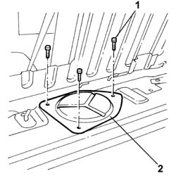
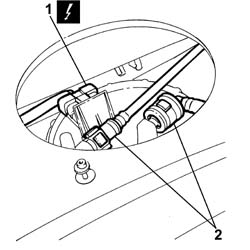
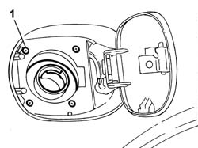
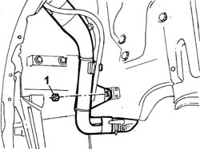
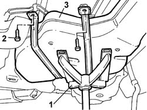

1040A10 FUEL TANK - R.R. and decant fuel
- Path
- Procedures > 10 ENGINE > 1040 FUEL TANK AND PIPES > 1040A FUEL TANK AND COMPONENTS > 1040A10 FUEL TANK - R.R. and decant fuel
- Kind
- repair procedure (removal / refitting; the operation number is the code)
- Applies to
- engines: 2.4 JTD 20V; all production periods
- Interactive page
- https://sloeber94.github.io/elrnDB-lThss/en/#/850307
Applies to: engines: 2.4 JTD 20V; all production periods
 Removing
Removing
 Refitting
Refitting- Position the vehicle on a lift.
- Draw off the fuel from the tank using a suitable tool and protection in line with current safety regulations.
- Open the boot, remove the cover on the left hand side and disconnect the negative battery lead.
1. Undo the bolts (1a) and remove the hooks (1b).
2. Remove the luggage compartment cover.

Applies to: engines: 2.4 JTD 20V; all production periods
1. Undo the retaining bolts.
2. Remove the access cover for the submerged fuel assembly complete with level gauge control.

Applies to: engines: 2.4 JTD 20V; all production periods
1. Disconnect the electrical connection from the submerged pump assembly complete with level gauge.
 | Description | Connector |
|---|---|---|
1 | Fuel pump and level gauge | N040 |
2. Disconnect the rapid connector for the fuel supply and return pipe from the submereged pump assembly complete with level gauge.

Applies to: engines: 2.4 JTD 20V; all production periods
See in Op. 7040B10 LOAD CARRYING COMPARTMENT LINING - R.R.
See in Op. 7040B17 Luggage compartment/load platform side trim flap (one) - Replace
See in Op. 7040B13 Luggage compartment/load platform SIDE LINING - R.R.
See in Op. 4450B11 Rear WHEEL (one) - R.R.
See in Op. 7055B43 REAR WHEEL ARCH LINER (one), left or right - R.R.
See in Op. 4440K31 LEFT OR RIGHT REAR INTELLIGENT SUSPENSION SHOCK ABSORBER (ONE) - R.R.
See in Op. 1076B20 Rear exhaust SILENCER - R.R.
See in Op. 1076A40 Exhaust pipe HEAT SHIELDS - R.R.
See in Op. 4420D10 REAR SUSPENSION AXLE - R.R.
1. Undo the bolts fixing the fuel filler pipe to the bodyshell.

Applies to: engines: 2.4 JTD 20V; all production periods
1. Undo the nut fixing the fuel filler pipe to the bodyshell.

Applies to: engines: 2.4 JTD 20V; all production periods
1. Position a suitable tool under the tank to support it during the removal operation.
2. Undo the bolts fixing the tank brackets.
- Lower the hydraulic jack.
3. Remove the fuel tank complete with fuel filler pipe.

Applies to: engines: 2.4 JTD 20V; all production periods
Refitting
Removing- Position the fuel tank on the supporting equipment.
- Raise the tank and tighten the bolts fixing the tank to the bodyshell to torque.
 | Value - daNm | Fastening | Component | Ø |
|---|---|---|---|---|
. | 1.2 | Bolt | FUEL TANK | M8 |
- Remove the tank supporting equipment.
- Tighten the bolts fixing the fuel filler pipe to the bodyshell.
- Tighten the nut fixing the fuel filler pipe to the bodyshell.
See in Op. 4420D10 REAR SUSPENSION AXLE - R.R.
See in Op. 1076A40 Exhaust pipe HEAT SHIELDS - R.R.
See in Op. 1076B20 Rear exhaust SILENCER - R.R.
See in Op. 4440K31 LEFT OR RIGHT REAR INTELLIGENT SUSPENSION SHOCK ABSORBER (ONE) - R.R.
See in Op. 7055B43 REAR WHEEL ARCH LINER (one), left or right - R.R.
See in Op. 4450B11 Rear WHEEL (one) - R.R.
See in Op. 7040B13 Luggage compartment/load platform SIDE LINING - R.R.
See in Op. 7040B17 Luggage compartment/load platform side trim flap (one) - Replace
See in Op. 7040B10 LOAD CARRYING COMPARTMENT LINING - R.R.
- Connect the rapid connectors for the fuel supply and return pipes on the pump.
- Connect the electrical connection to the submerged pump assembly complete with level gauge.
| Description | Connector |
|---|---|---|
. | Fuel pump and level gauge | N040 |
- Fit the access cover and secure it using the bolts.
- Fit the luggage compartment cover and secure it using the bolts.
- Open the boot, connect the negative battery lead and fit the cover on the left hand side.
- Remove the vehicle from the lift.
Topics linked from this page (9)
- 1076A40 Exhaust pipe HEAT SHIELDS - R.R.
- 1076B20 Rear exhaust SILENCER - R.R.
- 4420D10 REAR SUSPENSION AXLE - R.R.
- 4440K31 LEFT OR RIGHT REAR INTELLIGENT SUSPENSION SHOCK ABSORBER (ONE) - R.R.
- 4450B11 Rear WHEEL (one) - R.R.
- 7040B10 LOAD CARRYING COMPARTMENT LINING - R.R.
- 7040B13 Luggage compartment/load platform SIDE LINING - R.R.
- 7040B17 Luggage compartment/load platform side trim flap (one) - Replace
- 7055B43 REAR WHEEL ARCH LINER (one), left or right - R.R.